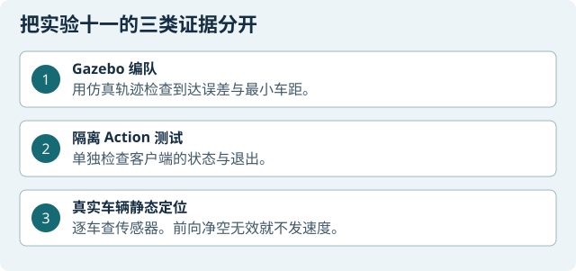
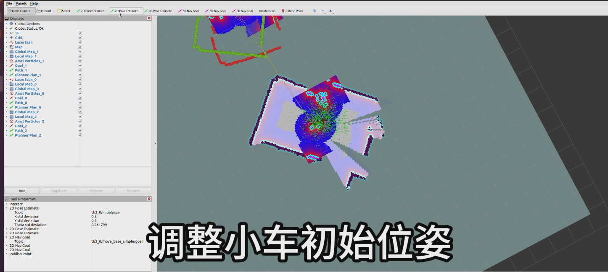

目标与边界
本章是选做内容，分为三条路线：断网 Gazebo 三车编队、隔离的 move_base Action 接口检查、真实三台车的静态传感器与地图预览。A 是控制机，M 是实验中间机，B 是小车。仿真运动、Action 服务测试和实车静态检查是三类不同证据，不能互相替代。
实车运动闸门：实车运动前，先通过前向雷达、里程计、速度话题归属、场地、底盘固定和实体急停检查。任一项未通过就不发布运动指令。
本章角色：三条路线分别是 Gazebo 仿真、隔离 Action 检查和实车静态观察；实车运动须通过单车和场地检查后再另行评估。
准备与检查
只在已有 ROS Noetic/Gazebo 环境使用 lab11_formation 包，不能在线安装依赖。开始前选定路线，查清 A 控制机、机器人和 ROS master 的当前状态；不要复用历史地址、话题或 TF frame。Gazebo 路线必须在断网容器运行；Action 路线只接隔离测试服务；实车路线先静态检查，未通过联锁不启动车辆。
操作步骤

先选路线。只做仿真按步骤 1–8；只做 Action 接口检查按步骤 1、9–11；只做实车静态检查按步骤 1、12–15 和 18；联锁失败时执行步骤 17，全部通过且安排单车短测时执行步骤 16。路线之间不共用 ROS master、状态或结果。
做路线隔离和现场确认
A 控制机 核对 Noetic 版本、工作区和当前 master。Gazebo/Action 路线使用断网容器及独立临时目录；实车路线确认机器人编号、Wi-Fi、串口和物理停车人。发现 ROS 会话归属或线路不明时，留在只读检查阶段。
准备三车 Gazebo 包
A 的 Ubuntu 终端 在配套控制机上运行
bash ~/lab11_prep/open-sim-shell.sh，打开专用的断网 Noetic 容器。课程包已接到工作区。新开的容器 shell 进入工作区，编译并载入编译结果
cd ~/catkin_ws catkin_make source devel/setup.bash构建报错时保存原始错误；检查包元数据和工作区配置，不在线下载或升级依赖。
启动断网编队仿真
A 断网容器 设定 Burger 型号并启动无 GUI 仿真，输出目录必须确实挂载回 Windows/宿主：
export TURTLEBOT3_MODEL=burger roslaunch lab11_formation three_burger_sim.launch \ gui:=false output_dir:="$PWD/runs"结束后从 A 的
~/catkin_ws/runs查看轨迹。该启动文件建立三条各自的 Gazebo 通道，位姿取自仿真模型。等全部启动联锁通过
A Gazebo 终端 等待仿真时间开启、三个模型出现、初始位置正确，并确认每台车各自的
/tb3_i/cmd_vel都有 Gazebo 订阅者。缺任何一项，程序应零速退出；不要手工补发速度。观察队形运行和停车
A Gazebo 窗口/日志 观察三台 Burger 是否保持各自通道和间距。控制器限速并设置最长运行时间；间距过小、超时、错误或中断时应全车停车。看到碰撞、模型丢失或速度异常时中止并保留日志。
检查仿真轨迹
A 输出目录 查看每轮的
trajectory.csv和summary.json，核对三车起点/终点、最近间距、结束状态和退出零速。仿真中的Goal reached只表示模型完成该场景路线，不表示导航栈或实体车通过。退出并保留本轮仿真
A 断网容器 等控制器完成零速收尾，再退出 ROS launch。确认轮次目录和摘要已写完后才关容器；异常退出时保留现场，不删除原始日志来“整理”结果。
单独记录仿真结论
查看每轮轨迹 CSV 和 JSON 摘要，核对目标误差、最小车间距、结束状态和退出零速。该仿真使用模型真值和专设平行通道，不验证课程地图导航或实车编队。
确认 Action 客户端的默认状态
A 独立断网容器 打开
~/lab11_prep/launch/course_move_base_opt_in.launch，找到allow_send_goals，确认默认值是false。根据现有设备选择 Action 路线
A 隔离测试容器 三车 Action 联调需要三套对应命名空间的虚拟 Action server。配套资料含客户端和预览配置。手头只有这些文件时，保留默认拒发状态，继续做 Gazebo 编队或实车静态检查。
记录 Action 接口检查范围
A 输出目录 只查看配置时，记下默认拒发与目标命名空间即可。如果另有隔离测试服务，再记录测试服务日志、目标分发、超时和取消结果。
实车路线先停车并核对三车
场地 / A 控制机 实车开始前清空场地、安排一人负责物理急停，并按车身标签逐台核对当天 Wi-Fi、SSH、串口和 master。每轮从设备和 ROS 图读取当前地址、接口、topic 与 TF；身份或连接不清楚时不启动。
实车只做静态传感器回读
A Noetic 终端 先列出 ROS 节点和话题，再按实际话题读取每台车的 scan、odom 与 TF。核对每个速度话题只有对应底盘订阅者，并确认三车静止速度为零。记录消息 frame 与坐标适配结果。
rosnode list rostopic list -v在静止状态查看共同地图

示意图｜逐车确认定位和坐标后，再查看共同地图。 A RViz · 实车隔离局域网 A 与三台车连接到同一隔离实验网络。逐项核对当天地图、各车 pose、scan topic 和 TF 后，在 RViz 打开 Map、LaserScan 和定位显示，逐车选择对应话题。只看三车在共同地图中的静态位置，全程不发导航目标。若某车位置或方向与现场不符，停在该车定位核查。
另行检查配置文件。如果用预览 launch 检查隔离配置，只在断网环境进行。速度只接
nav_preview_cmd_vel，无目标发布器；该配置检查独立记录。逐项检查前向雷达联锁
现场操作员 + A 控制机终端 车轮保持架空或底盘锁止，检查 scan 是否新鲜（时间戳距当前不超过 0.40 秒）、frame 是否对应当前车辆、前向扇区是否覆盖车头 ±0.45 弧度，并确认至少 3 个有效非零距离读数且最近距离不少于 0.48 米。里程计须显示车辆静止，目标速度话题只能由本轮测试程序发布并由对应底盘节点订阅。任一项不满足即判为联锁失败；不发速度、不转用 Action 路线。
联锁通过后，下一步是单车短测
先只留一台车，固定底盘并架空驱动轮，指定同伴守住实体急停。在有与这台车的命名空间、底盘和传感器匹配、具备限时归零的短测程序时，从零速开始，运行一次短脉冲，随后检查轮向、里程计、归零和程序退出。任一项不对就实体停车，回查这一台车。配套资料的实车路线做到静态检查，暂缺可以在不同车辆上复用的单车短测程序。手头缺少对应程序时，保留静态结果并用上面的 Gazebo 路线练编队。
即使完成单车短测，三车上场前也要重新核对共用地图、各车初始位姿、车间距和线缆。先逐台通过停车检查，再讨论三车路线。
联锁失败时停止并保存诊断
若联锁未通过，结束本轮并保存 scan 时间戳、frame、前向有效采样数、里程计静止状态和节点清理记录。排除传感器、遮挡或坐标问题后，另开一轮重新执行完整启动与停车检查；不得用旧结果跳过联锁。
收尾并按证据类型归档
A / 场地 确认本轮节点和串口已释放、底盘静止、RViz 与临时 master 按启动逆序结束。分别归档 Gazebo 轨迹、隔离 Action 日志、实车静态雷达/里程计/地图截图和联锁结果；不要把三类结果合写成一次“多车编队成功”。
检查与证据
Gazebo 证据至少包含本轮启动日志、CSV、JSON 和退出零速；Action 证据包含测试服务日志、每车目标记录、取消结果和客户端 JSON；实车静态证据包含当日拓扑、三车 scan/odom 原始读数、TF、地图/RViz 截图及清理回执。报告中明确标注“仿真”“隔离 Action”或“实车静态”。
Gazebo 编队、隔离 Action 接口、实车静态检查与实车运动是不同阶段，分别记录结果；静态检查或联锁预览不等于真实车辆已完成编队。
故障排查
- Gazebo 等不到模型/订阅者：保持零速退出，分别查模型加载、namespace 和 launch 日志；不要直接运行控制器脚本绕过检查。
- Action server 等待超时或 frame 不一致：留在隔离测试容器，核对服务名、目标 frame 和本轮日志；不改连实车测试。
- 实车 scan 全零或过期：将联锁判为失败，停止实车路线，保存原始帧和时间戳；不降低有效采样门槛。
- 三车 TF 或地图位置冲突：先区分消息话题与 frame ID，保存原始图，不启动导航目标。
收尾
确认所有路线的本轮进程已退出并按类型保存证据。Gazebo 完成不代表 Action 成功；Action 服务通过不代表实车能走；真实静态定位也不代表运动联锁通过。实车运动只从单车短测开始；任何多车路线都要另行核对地图定位、相邻间距、底盘 footprint 和轮边线缆。仿真与隔离 Action 结果不能替代实车编队验证。